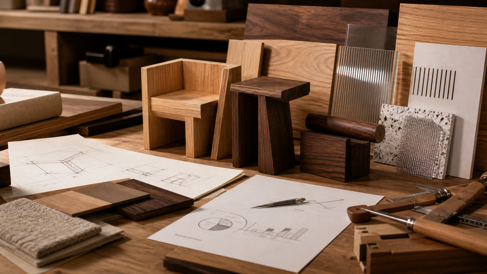

2026.08.18 가구·인테리어·목공 일일 트렌드

오늘의 흐름은 '멋진 물건'보다 '바뀌는 생활에 맞춰 오래 작동하는 구조'에 가깝습니다. 모듈형 가구는 고가 디자인의 언어를 더 넓은 가격대로 내리고, Frank Lloyd Wright식 자연 소재와 빌트인은 빠른 장식보다 구조적 완성도를 다시 요구합니다. 동시에 IWF의 패널 소싱과 주택 수요 지표는 공방이 감각뿐 아니라 납기, 원가, 고객의 실제 구매 여력까지 같이 봐야 한다는 압박을 줍니다.
1. H&M HOME과 Kelly Wearstler 협업은 모듈형 가구가 대중 가격대로 내려오는 신호입니다
Better Homes & Gardens는 2026년 8월 17일 Kelly Wearstler의 H&M HOME 데뷔 컬렉션을 보도했습니다. 29개 홈 데코·가구 제품으로 구성된 이 협업은 혼합 소재, 조각적 형태, 모듈형 암체어와 소파 조합을 내세우며 2026년 9월 3일 온라인과 일부 매장에서 출시됩니다. H&M 공식 페이지도 이 컬렉션을 작은 조각을 더 큰 시스템으로 확장하는 모듈형 가구로 설명하고, 목재·금속·대리석을 핵심 소재로 제시합니다.
왜 중요한가. 모듈형은 더 이상 사무용 시스템 가구나 저가 조립가구의 언어만 아닙니다. 목간도 의자, 벤치, 낮은 수납장처럼 작은 단위가 연결되어 긴 소파, 현관 벤치, 창가 수납으로 확장되는 구조를 실험할 수 있습니다. 단, 모듈형을 팔려면 결합부 안정성, 높이 통일, 쿠션 교체, 운송 포장 규격까지 설계해야 하므로 '형태 아이디어'만으로는 부족합니다.
- Better Homes & Gardens, Kelly Wearstler's H&M Home Debut Is Full of Modular Furniture and Artful Decor · 2026.08.17
- H&M HOME, Designer collaboration | Kelly Wearstler H&M HOME · 2026.09.03 출시 안내, 2026.08.18 확인
2. Frank Lloyd Wright식 자연 소재와 빌트인이 다시 주목받는 이유는 장식보다 '건축적 일체감'입니다
Better Homes & Gardens는 2026년 8월 17일 Frank Lloyd Wright의 디자인 요소 중 실내외 연결, 자연 소재, 빌트인 수납과 통합 목공, 특수 창호, 기하학적 형태가 현대 주거에서 다시 힘을 얻고 있다고 정리했습니다. 기사에서 디자이너들은 월넛과 풍부한 톤의 목재, 시간이 지나며 변하는 금속, 맞춤 빌트인과 밀워크가 빠른 장식보다 더 오래가는 선택이라고 설명합니다.
왜 중요한가. 원목가구 공방은 독립형 가구만 만들면 공간의 일부를 놓칩니다. 책장, 창가 벤치, 식탁 옆 낮은 수납, 현관 붙박이처럼 벽·창·동선과 맞물리는 제안을 해야 평균 객단가와 설계 신뢰도가 올라갑니다. 다만 빌트인은 현장 실측, 벽체 수평, 콘센트·몰딩 간섭, 추후 이사 불가 리스크를 계약서에 명확히 넣어야 합니다.
3. '피해야 할 인테리어' 논의는 공방에게 제품보다 큐레이션 기준을 요구합니다
Business Insider는 2026년 8월 17일 영국 인테리어 디자이너 Benji Lewis가 자신의 집에 두지 않을 요소를 소개했습니다. 그는 무심한 포인트 벽, 관리가 어려운 오픈 선반, 과한 플로어 램프, 낡은 산업풍 표지판, 키치한 레트로 장치, 문구형 월아트, 콩주머니 의자, 과도한 매립등을 피한다고 말했습니다. 반대로 빈티지 가구, 잘 계획된 선반 간격, 은은한 조명, 기능적인 작은 의자 같은 선택을 제안했습니다.
왜 중요한가. 고객은 '예쁜 가구 하나'보다 집이 싸 보이지 않는 판단 기준을 원합니다. 목간의 상담 콘텐츠도 오픈 선반을 권할 때는 먼지, 조명, 선반 간격, 진열 물건 수를 같이 제시하고, 주방에는 완전한 붙박이만이 아니라 빈티지풍 독립 수납장이나 원목 아일랜드를 제안해야 합니다. 팔지 않을 것을 말할 수 있어야 브랜드 신뢰가 생깁니다.
4. IWF의 Canusa Wood 발표는 패널 제품이 단순 대체재가 아니라 공급망 전략이 됐다는 뜻입니다
Woodworking Network는 2026년 8월 17일 Canusa Wood가 2026년 8월 25일부터 28일까지 IWF Atlanta에서 ProLam 패널 컬렉션과 하드우드 합판, MDF, 특수 패널 솔루션을 전시한다고 보도했습니다. Canusa Wood는 글로벌 공급망 변화 속에서 소싱 네트워크와 운송 경로를 강화하고, 제조사가 안정적으로 품질 패널을 확보하도록 제품 포트폴리오를 확장하고 있다고 설명했습니다.
왜 중요한가. 원목만 고집하면 가격, 납기, 휨, 무게 문제에 취약합니다. 보이지 않는 구조부, 넓은 문짝, 수납장 내부, 라미네이션용 표면에는 합판·MDF·특수 패널이 더 합리적일 수 있습니다. 목간은 '원목 vs 패널'을 선악 구도로 설명하지 말고, 부위별로 원목, 무늬목, 합판, MDF, 라미네이트의 장단점과 유지보수 기준을 표로 정리해야 합니다.
5. 주택 수요 지표는 맞춤가구가 '고급 고객'과 '작은 시장'을 더 냉정하게 봐야 한다고 말합니다
Woodworking Network는 2026년 8월 17일 NAHB/Wells Fargo Housing Market Index를 인용해 8월 미국 신규 단독주택 건설업자 신뢰도가 35로 1포인트 올랐지만 여전히 낮은 수준이라고 보도했습니다. 기사에 따르면 35%의 건설업자가 가격을 인하했고, 인센티브 사용은 63%였습니다. NAHB 수석이코노미스트 Robert Dietz는 맞춤 주택 건설업자가 분양형 건설업자보다 더 강한 시장 상황을 보고하고, 작고 덜 밀집된 시장이 대도시보다 상대적으로 낫다고 설명했습니다.
왜 중요한가. 수요가 약할 때 공방은 무작정 제품 수를 늘리면 재고와 촬영비만 늘어납니다. 오히려 맞춤 상담, 작은 공간 수납, 고급 소재 옵션, 유지보수 포함 견적처럼 구매 확률이 높은 고객군에 집중해야 합니다. 가격 인하가 시장 전반에 퍼질수록 목간은 할인보다 제작 범위, 납기, 보증, 사후 조정 조건을 명확히 해 체감 가치를 만들어야 합니다.
- Woodworking Network, Builder confidence gains one point in August, reports construction group · 2026.08.17
- NAHB/Wells Fargo Housing Market Index · 월간 HMI 지표 설명, 2026.08.18 확인
오늘의 실무 인사이트
- 모듈형 제품은 결합부부터 설계한다. 확장 가능한 벤치나 의자를 기획한다면 먼저 높이, 깊이, 연결 하드웨어, 포장 크기, 조립 시간 기준을 정해야 합니다.
- 빌트인은 현장 리스크를 견적 항목으로 분리한다. 실측, 벽체 보정, 콘센트 이동, 몰딩 절단, 운반 동선은 제품 가격과 별도 항목으로 보여줘야 분쟁이 줄어듭니다.
- 소재 설명은 부위별로 해야 설득력이 생긴다. 상판은 원목, 뒷판은 합판, 큰 문짝은 안정성이 높은 패널처럼 용도별 선택 이유를 제시하면 '싸게 대체했다'는 오해를 줄일 수 있습니다.
- 약한 시장에서는 할인보다 선택 피로를 줄인다. 3단계 패키지, 명확한 납기, 사후 조정 포함 여부, 유지보수 안내가 가격 인하보다 구매 결정을 더 쉽게 만들 수 있습니다.